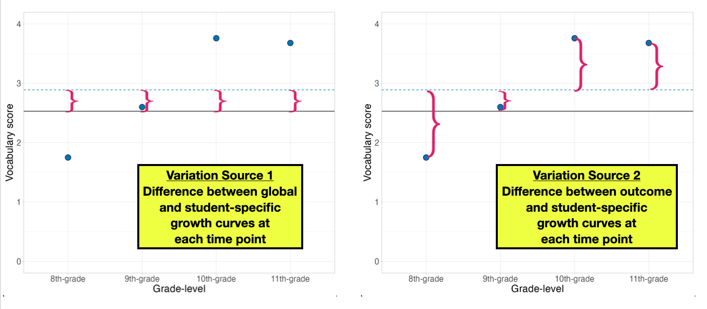

In this set of notes, you will learn how to use the linear mixed-effects model to examine the mean change over time in a set of longitudinal/repeated measurements. To do this, we will use data from the file vocabulary.csv (see data codebook).
These data include repeated measurements of scaled vocabulary scores for \(n=64\) students.
# Load librarieslibrary(AICcmodavg)library(broom.mixed) #for tidy, glance, and augment functions for lme4 modelslibrary(corrr)library(educate)library(lme4) #for fitting mixed-effects modelslibrary(patchwork)library(texreg)library(tidyverse)# Read in datavocabulary =read_csv(file ="https://raw.githubusercontent.com/zief0002/fluffy-ants/main/data/vocabulary.csv")# View datavocabulary
We will use these data to explore the change in vocabulary over time (longitudinal variation in the vocabulary scores). In most longitudinal analyses, the primary goal is to examine the mean change of some outcome over time. To do this we will focus on the following research question: (1) What is the growth pattern in the average vocabulary score over time?
17.1 Data Structure: Tidy/Long Data vs. Wide Data
Before doing any analysis of the data, it is worth understanding the structure of the data. There are two common structures for repeated measures data: tidy/long structured data and wide structured data.
In tidy/long structured data, there is a single column per variable. For example, the outcome variable (vocabulary scores) would be organized into a single column. Similarly, the predictor that designates time (grade-level in our example) would also be organized into a single column.
In wide structured data, the outcome variable (or predictor variables) is typically spread out over multiple columns. Often there are not columns that include data on the time predictor; instead this information is typically embedded in the column name.
The vocabulary data is currently structured as wide data; the vocabulary scores are organized into four separate columns and the information about grade-level (the time predictor) is embedded in the variable names (e.g., vocab_08 indicates 8th-grade). The same data are presented below in the tidy/long structure.
Notice that in the tidy/long structured data that the vocabulary scores (outcome) are now organized into a single column. Grade-level (the time predictor) is also now explicitly included in the data and is also organized as a single column in the data. Note that in the long structure, each row now represents a particular student at a particular grade-level, and that each student’s data now encompasses several rows.
There are advantages to each of the structures. For example the wide structure has the advantage of being a better structure for data entry. Since each row corresponds to a different student, there are fewer rows and therefore less redundancy in the data entry process. Compare this to the tidy/long data where each student’s data encompasses four rows. If you were doing data entry in this structure you would need to record the student’s sex four times rather than once in the wide structure.
The tidy/long structure is the structure that is needed for modeling. Thus, if one of the analytic goals is to fit a linear mixed-effects model to explain variation or examine predictor effects, the tidy/long data structure is key. Note that the wide structured data is also used in some analyses (e.g., computing correlations).
17.1.1 Switching between the Two Data Structures
The library {tidyr} (loaded as part of the {tidyverse} metapackage) has two functions that convert data between these two structures:
pivot_longer() (wide \(\rightarrow\) tidy/long), and
pivot_wider() (tidy/long \(\rightarrow\) wide).
Below, I show the code for going from the wide structured data (vocabulary) to the tidy/long structure.
# Convert from wide to long structured datavocabulary_long = vocabulary |>pivot_longer(cols = vocab_08:vocab_11, names_to ="grade", values_to ="vocab_score") |>arrange(id, grade)# View datavocabulary_long
Here is an animated tutorial for understanding this syntax.
For more information about using these functions, Google “tidyr pivot” and read through any number of great tutorials or vignettes; for example here. You can also read Hadley Wickham’s (2014) original paper on tidy data.
17.2 Exploration: Plot of the Mean and Individual Profiles
There are two plots that are particularly useful in exploring longitudinal data. The first is a plot of the mean value of the outcome at each time point (mean profile plot). This shows the average growth profile and is useful for determining the functional form of the fixed-effects part of the model; is the mean change over time linear? Quadratic? Log-linear?
Another plot that is often examined is a plot of the individual patterns or profiles, referred to as a spaghetti plot. A spaghetti plot is useful for determining whether there is variation from the average profile. This helps us to consider the set of random-effects to include in the model. Below we examine both the mean profile and individual profiles simultaneously.
Figure 17.1: Plot showing the change in vocabulary score over time for 64 students. The average growth profile is displayed as a thicker line.
Because our research question is focused on examining the average change of vocabulary scores over time, we will focus on the mean profile. Based on this plot:
The average profile displays change over time that is positive (growth) and linear (or perhaps log-linear).
17.3 Unconditional Random Intercepts Model
As in a conventional fixed-effects regression analysis we begin a mixed-effects analysis by fitting the intercept-only model. This model is referred to as the unconditional random intercepts model or the unconditional means model. The model posits that there is no change over time in the average vocabulary score.
This model includes a fixed-effect of intercept and a random-effect of intercept, and no other predictors. This is the simplest model we can fit while still accounting for the dependence in the data (e.g., including a random-effect). The statistical model in this example can be expressed as:
\(\mathrm{Vocabulary~Score}_{ij}\) is the vocabulary score for Student \(j\) at time point \(i\);
\(\beta_0\) is the fixed-effect of intercept;
\(b_{0j}\) is the random-effect of intercept for Student \(j\); and
\(\epsilon_{ij}\) is the error for Student \(j\) at time point \(i\).
17.3.1 Fitting and Interpreting the Model
We fit the model and display the output below. We include the argument REML=FALSE to force the lmer() function to produce maximum likelihood estimates (rather than restricted maximum likelihood estimates). In practice, we will generally want to fit these models using ML estimation.
# Fit modellmer.0=lmer(vocab_score ~1+ (1| id), data = vocabulary_long, REML =FALSE)
Recall that there are two types of fitted equations we can produce from this model: (1) the global fitted equation, and (2) student-specific fitted equation. The global fitted equation is based on only the fixed effects. We obtain the fixed-effects estimates using the tidy() function from the {broom.mixed} package with the argument effects="fixed".
# Fit modellmer.0=lmer(vocab_score ~1+ (1| id), data = vocabulary_long, REML =FALSE)# Coefficient-level outputtidy(lmer.0, effects ="fixed")
Using the fixed-effects estimates, the global fitted equation based on the fixed-effects model is:
\[
\hat{\mathrm{Vocabulary~Score}_{ij}} = 2.53
\]
We interpret coefficients from the fixed-effects model the same way we interpret coefficients produced from the lm() output. For example,
The predicted average vocabulary language score for all students at all time points is 2.53.
We can also write the student specific fitted equations. Each student specific fitted equation is based on the fixed-effects AND the student-specific random-effect. To obtain the student-specific random-effects we use the tidy() function from the {broom.mixed} package with the argument effects="ran_vals".
# Obtain random effectstidy(lmer.0, effects ="ran_vals")
# A tibble: 64 × 6
effect group level term estimate std.error
<chr> <chr> <chr> <chr> <dbl> <dbl>
1 ran_vals id 1 (Intercept) 0.359 0.629
2 ran_vals id 2 (Intercept) -0.193 0.629
3 ran_vals id 3 (Intercept) -1.24 0.629
4 ran_vals id 4 (Intercept) 1.13 0.629
5 ran_vals id 5 (Intercept) -3.38 0.629
6 ran_vals id 6 (Intercept) -1.63 0.629
7 ran_vals id 7 (Intercept) -1.02 0.629
8 ran_vals id 8 (Intercept) -1.62 0.629
9 ran_vals id 9 (Intercept) -1.62 0.629
10 ran_vals id 10 (Intercept) 0.915 0.629
# ℹ 54 more rows
# A tibble: 64 × 5
effect group level term estimate
<chr> <chr> <chr> <chr> <dbl>
1 ran_coefs id 1 (Intercept) 2.89
2 ran_coefs id 2 (Intercept) 2.34
3 ran_coefs id 3 (Intercept) 1.29
4 ran_coefs id 4 (Intercept) 3.66
5 ran_coefs id 5 (Intercept) -0.852
6 ran_coefs id 6 (Intercept) 0.907
7 ran_coefs id 7 (Intercept) 1.52
8 ran_coefs id 8 (Intercept) 0.913
9 ran_coefs id 9 (Intercept) 0.913
10 ran_coefs id 10 (Intercept) 3.45
# ℹ 54 more rows
From here, we see that Student 2’s fitted equation is:
\[
\hat{\mathrm{Vocabulary~Score}_{i2}} = 2.34
\]
The predicted average vocabulary language score for Student 2 (at all time points) is 2.34. From the two students’ fitted equations we see that Student 1’s “growth” curve is higher than the average “growth” curve and Student 2’s “growth” curve is lower than the average “growth” curve. Here is a plot of those three “growth” curves.
Figure 17.2: Predicted change in vocabulary score over time based on the unconditional random intercepts model for all students (solid, black line), Student 1 (blue, dashed line), and Student 2 (orange, dashed line).
17.3.2 Partitioning Unexplained Variation
This model is not very informative for applied researchers in terms of characterizing change over time, but it is essential to decompose the variation into within- and between-subjects variation. In our model, there are two sources of variation. The first source of variation measures the between-student variation (how different are students’ individual “growth” curves). The second source of variation measures the within-student variation (how different are an individual’s outcome values from their individual “growth” curve).
To see this graphically, we show Student 1’s data along with the global “growth” curve and Student 1’s specific “growth” curves. The between-student variation is akin to the average of the squared deviations between each student-specific “growth” curve and the global “growth” curve. The left-hand plot below shows these residuals for Student 1, referred to as Level-2 residuals. The within-student variation is akin to the average of the squared deviations between each student’s outcome (vocabulary scores) and that student’s specific “growth” curve. The right-hand plot below shows these residuals for Student 1, referred to as Level-1 residuals.

Figure 17.3: Student 1’s vocabulary scores at each time point along with the predicted change in vocabulary score over time based on the unconditional random intercepts model for all students (solid, black line) and Student 1 (blue, dashed line). The between-student variation (LEFT) and within-student variation (RIGHT) based on the residuals for Student 1 are also displayed.
We quantify the amount of between- and within-student variation using an estimate of variance. The between-student variance estimate is denoted \(\sigma^2_{b_0}\) (or simply \(\sigma^20\)), and the within-student variance estimate is denoted \(\sigma^2_{\epsilon}\). We can access these paramater estimates using the argument effects="ran_pars" in the tidy() function.
# A tibble: 2 × 4
effect group term estimate
<chr> <chr> <chr> <dbl>
1 ran_pars id sd__(Intercept) 1.72
2 ran_pars Residual sd__Observation 1.35
Note that the output is in the standard deviation metric. We need to square these values to get the actual variance estimates.
Between-Student Variance:
\[
\hat\sigma^2_0 = 1.72^2 = 2.96
\]
Within-Student Variance:
\[
\hat\sigma^2_{\epsilon} = 1.35^2 = 1.82
\]
These values represent the unexplained variation at each level. The total unexplained variation is the sum of these two terms.
# Total unexplained variation2.96+1.82
[1] 4.78
We can compute the proportion of unexplained variation at each level by dividing the appropriate variance estimate by this total.
# Proportion of unexplained variation that is between-subjects2.96/ (2.96+1.82)
[1] 0.6192469
# Proportion of unexplained variation that is within-subjects1.82/ (2.96+1.82)
[1] 0.3807531
Interpreting these values:
Roughly 62% of the unexplained variation in vocabulary scores is between-student variation.
Roughly 38% of the unexplained variation in vocabulary scores is within-student variation.
Based on this partitioning from the unconditional random intercepts model we have evidence that it may be fortuitous to include both between-student and within-student predictors; there is unaccounted for variation at both levels. To explain the unaccounted for between-student variation, include between-student-level predictors (e.g., female) in the model. To explain the unaccounted for within-student variation, include within-student predictors (e.g., grade) in the model.
Since the larger proportion of unexplained variation is between-student variation, we might ultimately focus on between-student predictors more than within-student predictors. However, because this is a longitudinal analysis, our primary focus is on the grade predictor, which is a within-subjects predictor. It is here that we turn next.
FYI
This partitioning of variation should be done in every analysis, and ALWAYS is done using the unconditional random intercepts model. The unconditional random intercepts model will serve as our baseline model. As we add predictors, we can compare the unexplained variation at each level in the predictor models to the baseline unaccounted for variation in the unconditional means model. This is one way of measuring how effective predictors are at further explaining variation in the model.
17.4 Modeling: Unconditional Growth Model
To model change in the outcome over time, we include time as a fixed-effect in the LMER model. In this data set, the time predictor is grade, which is a categorical predictor. We could create dummy variables, or simply add grade into the model and let R choose the reference group alphabetically (vocab_08 in this example). The statistical model in this example can be expressed as:
The unexplained variance that is within-students has decreased from 1.82 to 0.81. Including grade-level in the model has explained 55.8% of the within-student variation. This is because grade is a within-student predictor (it has values that vary within each student).
Between-Student Variance (\(\hat\sigma^2_{0}\))
The unexplained variance that is between-students has increased from 2.96 to 3.21. This means that by including grade in the model we have increased the amount of unexplained variation that is between students! (The model explained \(-8.7\)% of the between-student variance.) This is a mathematical artifact of the estimation process.
17.4.1 Repeated-Measures ANOVA (RM-ANOVA)
One historic method of analyzing longitudinal data is Repeated Measures Analysis of Variance (RM-ANOVA).1 The linear mixed-effects model that includes time as one or more categorical predictors and a random-effect of intercept produces the same results as the RM-ANOVA.
WARNING
You should not use RM-ANOVA to analyze longitudinal data. It requires a condition called sphericity that makes some stringent assumptions about the variances and correlations between repeated measures. One requirement of sphericity is that the correlation between any two time points are exactly the same. Consider the correlations of our data:
# Compute correlations between repeated measuresvocabulary |>select(vocab_08:vocab_11) |>correlate()
# A tibble: 4 × 5
term vocab_08 vocab_09 vocab_10 vocab_11
<chr> <dbl> <dbl> <dbl> <dbl>
1 vocab_08 NA 0.810 0.866 0.782
2 vocab_09 0.810 NA 0.785 0.757
3 vocab_10 0.866 0.785 NA 0.811
4 vocab_11 0.782 0.757 0.811 NA
The correlations are not equal, and are likely not to be equal in the population! In repeated measures data, observations that are more closely spaced in time tend to be more correlated. This violates the sphericity assumption needed for RM-ANOVA. It is rare that sphericity is ever tenablein practice with longitudinal data. Because of this it is preferable to use LMER to carry out these analyses.
17.4.2 Quantitative Time Predictor: A More Flexible Model for Repeated Measures Data
One advantage to using the linear mixed-effects model to analyze repeated measures data over traditional methods (e.g., RM-ANOVA or MANOVA) is that the regression model allows for both categorical and quantitative variables. For example, rather than code our grade-levels categorically (as vocab_08, vocab_09, vocab_10 and vocab_11), which was a necessity in days of yore, we could have simply coded them as 8, 9, 10, and 11. Then we could have fitted the LMER model using this quantitative predictor. The statistical model when time is quantitative would be:
\(\mathrm{Vocabulary~Score}_{ij}\) is the vocabulary score at time point \(i\) for student \(j\);
\(\beta_0\) is the fixed-effect of intercept;
\(b_{0j}\) is the random-effect of intercept for student \(j\);
\(\mathrm{Grade}_{ij}\) is a quantitative variable indicating grade-level,
\(\beta_1\) is the effect of a one-unit change in grade, and
\(\epsilon_{ij}\) is the error at time point \(i\) for student \(j\).
This is still referred to as the unconditional growth model since the only predictor is a fixed-effect of time.
17.4.3 Lookup Table: Mapping Categories to Quantities
One method to convert grade to a quantitative variable is to create a lookup table. A lookup table maps the levels of the categorical time predictor to the values we want to use in our new quantitative predictor. Below I create a lookup table to map the categorical time predictor to the relevant grade-level (grade_quant).
Then, we join (or merge) the tidy/long data with the lookup table. This adds the quantitative variables (with the correct mapping) to our tidy data. There are, of course, other ways to accomplish the same thing. For example a mutate() using the case_when() function could also be used to create this mapping.
# Join the data with the lookup tablevocabulary_long = vocabulary_long |>left_join(lookup_table, by ="grade")# View datavocabulary_long
In this join, we are adding records from the lookup_table data (right data) to the vocabulary_long data (left data).2 When we perform this left join, the final joined data will include all records from vcabulary_long (left dataset) but only those records from the lookup_table dataset whose key (grade value) is contained in the student data. For example, if the lookup_table data included information about a grade level that was not included in the vocabulary_long data, it would not appear in the joined data.
The {tidyverse} package includes six different join functions. You can read about four common join functions and see an animation illustrating them here.
17.5 Fitting the Unconditional Growth Model with a Quantitative Time Predictor
Below we fit the linear mixed-effects model using the grade_quant predictor.
# Fit unconditional growth modellmer.2=lmer(vocab_score ~1+ grade_quant + (1|id), data = vocabulary_long, REML =FALSE)# Coefficient-level outputtidy(lmer.2, effects ="fixed")
The model using the quantitative predictor of grade-level is simpler than the model using the categorical version of grade-level since it has two fewer fixed-effects to estimate (fewer degrees-of-freedom = more parsimonious).
Interpreting the coefficients,
The predicted average vocabulary score for 0th-grade students (intercept) is \(-4.55\) (extrapolation).
Each one-unit difference in grade-level is associated with a 0.75-point difference in vocabulary score, on average.
Looking at the variance components:
# SDtidy(lmer.2, effects ="ran_pars")
# A tibble: 2 × 4
effect group term estimate
<chr> <chr> <chr> <dbl>
1 ran_pars id sd__(Intercept) 1.78
2 ran_pars Residual sd__Observation 0.947
The unexplained variance that is within-students has decreased from 1.82 to 0.90. Including grade-level in the model has explained 50.8% of the within-student variation. This is because grade is a within-student predictor (it has values that vary within each student).
Between-Student Variance (\(\hat\sigma^2_{0}\))
The unexplained variance that is between-students has increased from 2.96 to 3.18. This means that by including grade in the model we have increased the amount of unexplained variation that is between students by 7.8%; a mathematical artifact of the estimation process.
These are similar to the variance components obtained from the model using the categorical predictors of grade level.
17.6 Centering the Time Predictor: Better Interpretations of the Intercept
One method of improving the interpretations of the intercept is to center the time predictor. Recall that centering a variable means to add/subtract a constant value from each case. In a longitudinal analysis, we typically center the time predictor by subtracting the value of the time predictor at baseline (i.e., the first time point). In our example:
This essentially maps the values of {8, 9, 10, 11} in the quant_grade variable to {0, 1, 2, 3}. Then we include this centered predictor as fixed-effect in the model. Mathematically, the model is:
# Fit unconditional growth model with centered gradelmer.3=lmer(vocab_score ~1+I(grade_quant-8) + (1|id), data = vocabulary_long, REML =FALSE)# Coefficient-level outputtidy(lmer.3, effects ="fixed")
The predicted average vocabulary score for 8th-grade students is 1.41. Centering removes the problem of extrapolation in the interpretation because we have now made 0 a legitimate value in the predictor.
Each one-unit difference in grade-level is associated with a 0.75-point difference in vocabulary score, on average. This is identical to the previous model since we have not changed what a one-unit difference in the predictor represents.
We can see why the intercepts are different and the slopes are the same by comparing the plots of the individual growth profiles and the fitted fixed-effects models for the uncentered and centered predictors.
Figure 17.4: Plot showing the change in vocabulary score over time for 64 students. The average growth profile is also displayed. This is shown for the non-centered (left) and 8th-grade centered (right) grade-level. A large blue point is shown at the intercept value in both plots.
Looking at the variance components:
# SDtidy(lmer.3, effects ="ran_pars")
# A tibble: 2 × 4
effect group term estimate
<chr> <chr> <chr> <dbl>
1 ran_pars id sd__(Intercept) 1.78
2 ran_pars Residual sd__Observation 0.947
The unexplained variance that is within-students has decreased from 1.82 to 0.90. Including grade-level in the model has explained 50.8% of the within-student variation. This is because grade is a within-student predictor (it has values that vary within each student).
Between-Student Variance (\(\hat\sigma^2_{0}\))
The unexplained variance that is between-students has increased from 2.96 to 3.18. This means that by including grade in the model we have increased the amount of unexplained variation that is between students by 7.8%; a mathematical artifact of the estimation process.
These values are identical to the variance components obtained from the previous model. That is because the model we fitted is mostly identical to the uncentered quantitative model. The only difference is in the intercept value, which now is interpretable since a grade of 0 on the centered scale corresponds to the initial time point in the data; it is no longer extrapolation.
17.6.1 Student-Specific Profiles
Obtaining the coefficients for the student specific growth curves we get:
# Get student estimated parameterstidy(lmer.3, effects ="ran_coefs") |>arrange(as.numeric(level))
# A tibble: 128 × 5
effect group level term estimate
<chr> <chr> <chr> <chr> <dbl>
1 ran_coefs id 1 (Intercept) 1.80
2 ran_coefs id 1 I(grade_quant - 8) 0.747
3 ran_coefs id 2 (Intercept) 1.20
4 ran_coefs id 2 I(grade_quant - 8) 0.747
5 ran_coefs id 3 (Intercept) 0.0743
6 ran_coefs id 3 I(grade_quant - 8) 0.747
7 ran_coefs id 4 (Intercept) 2.63
8 ran_coefs id 4 I(grade_quant - 8) 0.747
9 ran_coefs id 5 (Intercept) -2.24
10 ran_coefs id 5 I(grade_quant - 8) 0.747
# ℹ 118 more rows
The fitted equations for the student-specific growth curves for Student 1 and Student 2 are:
The student-specific growth rates are identical for all students (i.e., the slope value is the same in all the equations), and also is the same as the average global growth rate. Including a random-effect of intercept, although accounting for the within-student correlation among vocabulary scores, does not allow students to have different rates-of-growth. The difference is in the intercept values, which indicates where students start (i.e., students’ initial vocabulary score in the 8th grade).
We can see these same things by plotting these student specific growth curves along with the global average growth curve.
Figure 17.5: Predicted change in vocabulary score over time based on the linear (centered) unconditional growth model for all students (solid, black line), Student 1 (blue, dashed line), and Student 2 (orange, dashed line).
The parallel lines suggest the same rate-of-growth across students.
17.6.2 Comparing the Unconditional Growth Models
The unconditional growth model was fitted using three different methods.
The first model treated time (grade) as categorical.
The second two models treated time as a continuous variable.
Treating time continuously rather than as a categorical predictor has many advantages:
In the real-world time is continuous.
The model is simpler. In the model where time was treated categorically, we had to estimate four regression coefficients and two variance components. In the continuous models, we only had to estimate two regression coefficients and two variance components. If there were additional time points, we would still only need to estimate four parameters for the continuous model, but the number of estimates would increase for the categorical model.
It allows us to include participants being measured at different times.
It allows us to model nonlinear relationships more easily.
FYI
In general, you should always treat time continuously when you have a longitudinal study! This guidance also implies that you should use linear mixed-effects models rather than RM-ANOVA for the analysis of longitudinal data.
Moreover, because of the interpretive value of the intercept when we center the grade-level predictor at the first time point, it is often a good idea to center your time predictor.
17.7 Re-Visiting the Functional Form of the Growth Model
As in any regression analysis, we need to specify the functional form of the growth model. Since the spaghetti plot suggested that the relationship between grade-level and vocabulary score may be nonlinear, below we consider three potential functional forms for our growth model (using centered grade level):
A linear relationship (already fitted: lmer.3);
A quadratic relationship; and
A log-linear relationship (based on log-transforming grade-level).
Note: Since the centered grade predictor includes values of zero, we need to add one to each value prior to log-transforming this predictor
As with any model, we want to examine the evidence to determine the correct functional form. In practice, you would also want to evaluate the residuals to see which of the potential candidate models meets the assumptions. (We will look at residuals in an upcoming set of notes.) Suffice it to say, the residual plots look similar across all three models indicating that all the models seem to meet the assumptions equally well. Since we are using the same outcome and data in all three models, we can also evaluate the models using information criteria and their related metrics.
Model selection based on AICc:
K AICc Delta_AICc AICcWt Cum.Wt LL
Log-linear growth 4 864.30 0.00 0.79 0.79 -428.07
Quadratic growth 5 866.96 2.67 0.21 1.00 -428.36
Linear growth 4 880.86 16.57 0.00 1.00 -436.35
No change 3 1015.35 151.06 0.00 1.00 -504.63
Given the data and candidate models, the evidence primarily supports the log-linear model. There is also some evidence for the quadratic model and almost no evidence for the linear model. This is consistent with the nonlinearity we observed in the mean profile in the spaghetti plot. Given this, the higher evidence for the log-linear model, and the simplicity of the log-linear model relative to the quadratic model, we will adopt the log-linear functional form for our unconditional growth model.
17.7.2 Examining the Output for the Adopted Log-Linear Fitted Model
The predicted average vocabulary score for 8th-grade students is 1.21. Remember that the centered value for 8th-grade is 0, which results in \(1.21 + 1.67\bigg[\ln(1)\bigg] = 1.21 + 1.67(0) = 1.21\).
Since we used the natural log, we can interpret the change in X as a percent change and the change in Y as \(\hat{\beta_1}/100\); Each one-percent difference in grade-level is associated with a 0.0166-point difference in vocabulary score, on average.
Looking at the variance components:
# SDtidy(lmer.5, effects ="ran_pars")
# A tibble: 2 × 4
effect group term estimate
<chr> <chr> <chr> <dbl>
1 ran_pars id sd__(Intercept) 1.79
2 ran_pars Residual sd__Observation 0.907
The unexplained variance that is within-students has decreased from 1.82 to 0.82, a 54.9% explanation of the within-student variation.
Between-Student Variance (\(\hat\sigma^2_{0}\))
The unexplained variance that is between-students has increased from 2.96 to 3.20, an increase of 8.1% in the unexplained between-students variation.
These values are quite similar to the variance components obtained from the other unconditional growth models since time (grade level) is the only effect included in the model.
17.7.3 Plot of the Unconditional Growth Model
To better understand the relationship between grade-level and vocabulary score represented in the adopted unconditional growth model, we can plot the predicted mean profile based on the model’s fixed-effects.
Again, because we only included a random-effect of intercept the student-specific growth rates are identical for all students (i.e., the slope value is the same in all the equations), and also is the same as the average global growth rate. The random-effect of intercept does allow students to have different intercept values (i.e., students’ initial vocabulary score in the 8th grade can differ).
We can see these same things by plotting these student specific growth curves along with the global average growth curve.
Figure 17.7: Predicted change in vocabulary score over time based on the log-linear unconditional growth model for all students (solid, black line), Student 1 (blue, dashed line), and Student 2 (orange, dashed line).
The parallel curves suggest the same rate-of-growth across students.
17.8 Answering the Research Question
Here we present the rersults of our analysis in prose. We also presented a table of results from the fitted candidate models. For mixed-effects models, it is important to present coefficients and standard errors, estimated variance components, and any model-level summaries.
INTERPRETATION
We set out to answer the following research question: What is the growth pattern in the average vocabulary score over time? We fitted four potential models corresponding to different growth patterns: no change over time, linear growth, quadratic growth, and log-linear growth. These models were evaluated using the AICc.
The evidence indicated that there was no empirical support for either the no change over time model. This indicates that students’ vocabulary scores are changing over time, on average. There was also no empirical support for the linear growth model indicating that the change over time is non-linear in nature. The log-linear growth model had the most empirical support, although there was also some support for the quadratic growth model. These models both suggest that students’ vocabulary scores, on average, are growing over time, but that growth diminishes over time.
We can also provide a table of the fitted model results. This table is similar to the table we create for fixed-effects regression models. However, we now need to include multiple variance components.
Code
htmlreg(l =list(lmer.0, lmer.3, lmer.4, lmer.5),stars =numeric(0), #No p-value starsdigits =2,padding =20, #Add space around columns (you may need to adjust this via trial-and-error)custom.model.names =c("Model 1", "Model 2", "Model 3", "Model 4"),custom.coef.names =c("Intercept", "Grade", "Grade$^2$", "ln(Grade)"),reorder.coef =c(2:4, 1), #Put intercept at bottom of tableinclude.loglik =FALSE, #Omit log-likelihoodinclude.aic =FALSE, #Omit AICinclude.bic =FALSE, #Omit BICinclude.nobs =FALSE, #Omit sample sizeinclude.groups =FALSE, #Omit group sizecustom.gof.names =c("$\\hat\\sigma^2_{0}$", "$\\hat\\sigma^2_{\\epsilon}$"), # Rename variance component rowscustom.gof.rows =list(AICc =c(AICc(lmer.0), AICc(lmer.3), AICc(lmer.4), AICc(lmer.5)) # Add AICc values#R2 = (2722.5 - c(NA, 2662.09, 2605.00, 2540.35, 2536.67)) / 2722.5 ),reorder.gof =c(2, 3, 1),caption =NULL,caption.above =TRUE, #Move caption above tableinner.rules =1, #Include line rule before model-level outputouter.rules =1 , #Include line rules around tablecustom.note ="The grade predictor was centered at 8th-grade for Models 2 and 3. In Model 4, it was centered at 7th grade to ensure all values were greater than 0.")
Table 17.1: Four candidate models predicting longitudinal variation in students’ vocabulary scores.
Model 1
Model 2
Model 3
Model 4
Grade
0.75
1.44
(0.05)
(0.18)
Grade\(^2\)
-0.23
(0.06)
ln(Grade)
1.67
(0.11)
Intercept
2.53
1.41
1.18
1.21
(0.23)
(0.24)
(0.25)
(0.25)
\(\hat\sigma^2_{0}\)
2.95
3.18
3.20
3.20
\(\hat\sigma^2_{\epsilon}\)
1.83
0.90
0.82
0.82
AICc
1015.35
880.86
866.96
864.30
The grade predictor was centered at 8th-grade for Models 2 and 3. In Model 4, it was centered at 7th grade to ensure all values were greater than 0.
Unfortunately RM-ANOVA is still used, despite many known methodological limitations of the methodology, and the availability of better analytic options (e.g., LMER).↩︎
They are referred to as ‘left’ and ‘right’ because of where they appear in the syntax. If we wrote the syntax without the pipe it would be left_join(vocabulary_long, lookup_table, by = "grade"). In the syntax, vocabulary_long is to the left of lookup_table.↩︎
Source Code
# LMER: Average Change Over Time```{r}#| echo: falsesource("scripts/_common.R")```In this set of notes, you will learn how to use the linear mixed-effects model to examine the mean change over time in a set of longitudinal/repeated measurements. To do this, we will use data from the file [*vocabulary.csv*](https://raw.githubusercontent.com/zief0002/fluffy-ants/main/data/vocabulary.csv) (see [data codebook](http://zief0002.github.io/fluffy-ants/codebooks/vocabulary.html)).These data include repeated measurements of scaled vocabulary scores for $n=64$ students.```{r}#| label: setup#| message: false# Load librarieslibrary(AICcmodavg)library(broom.mixed) #for tidy, glance, and augment functions for lme4 modelslibrary(corrr)library(educate)library(lme4) #for fitting mixed-effects modelslibrary(patchwork)library(texreg)library(tidyverse)# Read in datavocabulary =read_csv(file ="https://raw.githubusercontent.com/zief0002/fluffy-ants/main/data/vocabulary.csv")# View datavocabulary```We will use these data to explore the change in vocabulary over time (longitudinal variation in the vocabulary scores). In most longitudinal analyses, the primary goal is to examine the mean change of some outcome over time. To do this we will focus on the following research question: (1) What is the growth pattern in the average vocabulary score over time? <br />## Data Structure: Tidy/Long Data vs. Wide DataBefore doing any analysis of the data, it is worth understanding the structure of the data. There are two common structures for repeated measures data: *tidy/long structured data* and *wide structured data*.- In **tidy/long** structured data, there is a single column per variable. For example, the outcome variable (vocabulary scores) would be organized into a single column. Similarly, the predictor that designates time (grade-level in our example) would also be organized into a single column.- In **wide** structured data, the outcome variable (or predictor variables) is typically spread out over multiple columns. Often there are not columns that include data on the time predictor; instead this information is typically embedded in the column name.The vocabulary data is currently structured as wide data; the vocabulary scores are organized into four separate columns and the information about grade-level (the time predictor) is embedded in the variable names (e.g., `vocab_08` indicates 8th-grade). The same data are presented below in the tidy/long structure.```{r}#| echo: falsevocabulary |>pivot_longer(cols = vocab_08:vocab_11, names_to ="grade", values_to ="vocab_score") |>arrange(id, grade)```Notice that in the tidy/long structured data that the vocabulary scores (outcome) are now organized into a single column. Grade-level (the time predictor) is also now explicitly included in the data and is also organized as a single column in the data. Note that in the long structure, each row now represents a particular student at a particular grade-level, and that each student's data now encompasses several rows.There are advantages to each of the structures. For example the wide structure has the advantage of being a better structure for data entry. Since each row corresponds to a different student, there are fewer rows and therefore less redundancy in the data entry process. Compare this to the tidy/long data where each student's data encompasses four rows. If you were doing data entry in this structure you would need to record the student's sex four times rather than once in the wide structure.The tidy/long structure is the structure that is needed for modeling. Thus, if one of the analytic goals is to fit a linear mixed-effects model to explain variation or examine predictor effects, the tidy/long data structure is key. Note that the wide structured data is also used in some analyses (e.g., computing correlations).<br />### Switching between the Two Data StructuresThe library `{tidyr}` (loaded as part of the `{tidyverse}` metapackage) has two functions that convert data between these two structures:- `pivot_longer()` (wide $\rightarrow$ tidy/long), and - `pivot_wider()` (tidy/long $\rightarrow$ wide). Below, I show the code for going from the wide structured data (`vocabulary`) to the tidy/long structure.```{r}# Convert from wide to long structured datavocabulary_long = vocabulary |>pivot_longer(cols = vocab_08:vocab_11, names_to ="grade", values_to ="vocab_score") |>arrange(id, grade)# View datavocabulary_long```Here is an animated tutorial for understanding this syntax.```{=html}<iframe height="750" src="https://haswal.github.io/pivot/" onload='javascript:(function(o){o.style.height=o.contentWindow.document.body.scrollHeight+"px";}(this));' style="height:750px;width:100%;border:none;overflow:hidden;"></iframe>```For more information about using these functions, Google "tidyr pivot" and read through any number of great tutorials or vignettes; for example [here](https://tidyr.tidyverse.org/articles/pivot.html). You can also read Hadley Wickham's [-@Wickham:2014] original paper on tidy data.<br />## Exploration: Plot of the Mean and Individual ProfilesThere are two plots that are particularly useful in exploring longitudinal data. The first is a plot of the mean value of the outcome at each time point (*mean profile plot*). This shows the average growth profile and is useful for determining the functional form of the fixed-effects part of the model; is the mean change over time linear? Quadratic? Log-linear? Another plot that is often examined is a plot of the individual patterns or profiles, referred to as a *spaghetti plot*. A spaghetti plot is useful for determining whether there is variation from the average profile. This helps us to consider the set of random-effects to include in the model. Below we examine both the mean profile and individual profiles simultaneously.```{r}#| label: fig-ind-profiles#| fig-cap: "Plot showing the change in vocabulary score over time for 64 students. The average growth profile is displayed as a thicker line."#| fig-alt: "Plot showing the change in vocabulary score over time for 64 students. The average growth profile is displayed as a thicker line."ggplot(data = vocabulary_long, aes(x = grade, y = vocab_score)) +geom_line(aes(group = id), alpha =0.3) +#Add individual profilesstat_summary(fun = mean, geom ="line", size =2, group =1) +#Add mean profile linestat_summary(fun = mean, geom ="point", size =3) +#Add mean profile pointstheme_light() +scale_x_discrete(name ="Grade-level",labels =c("8th-grade", "9th-grade", "10th-grade", "11th-grade") ) +ylab("Vocabulary score")```Because our research question is focused on examining the average change of vocabulary scores over time, we will focus on the mean profile. Based on this plot:- The average profile displays change over time that is positive (growth) and linear (or perhaps log-linear).<br />## Unconditional Random Intercepts ModelAs in a conventional fixed-effects regression analysis we begin a mixed-effects analysis by fitting the intercept-only model. This model is referred to as the *unconditional random intercepts model* or the *unconditional means model*. The model posits that there is *no change over time* in the average vocabulary score.This model includes a fixed-effect of intercept and a random-effect of intercept, and no other predictors. This is the simplest model we can fit while still accounting for the dependence in the data (e.g., including a random-effect). The statistical model in this example can be expressed as:$$\mathrm{Vocabulary~Score}_{ij} = \big[\beta_0 + b_{0j}\big] + \epsilon_{ij}$$where,- $\mathrm{Vocabulary~Score}_{ij}$ is the vocabulary score for Student $j$ at time point $i$;- $\beta_0$ is the fixed-effect of intercept;- $b_{0j}$ is the random-effect of intercept for Student $j$; and- $\epsilon_{ij}$ is the error for Student $j$ at time point $i$.<br />### Fitting and Interpreting the ModelWe fit the model and display the output below. We include the argument `REML=FALSE` to force the `lmer()` function to produce maximum likelihood estimates (rather than restricted maximum likelihood estimates). In practice, we will generally want to fit these models using ML estimation.```{r}# Fit modellmer.0=lmer(vocab_score ~1+ (1| id), data = vocabulary_long, REML =FALSE)```Recall that there are two types of fitted equations we can produce from this model: (1) the global fitted equation, and (2) student-specific fitted equation. The global fitted equation is based on only the fixed effects. We obtain the fixed-effects estimates using the `tidy()` function from the `{broom.mixed}` package with the argument `effects="fixed"`.```{r}# Fit modellmer.0=lmer(vocab_score ~1+ (1| id), data = vocabulary_long, REML =FALSE)# Coefficient-level outputtidy(lmer.0, effects ="fixed")```Using the fixed-effects estimates, the global fitted equation based on the fixed-effects model is:$$\hat{\mathrm{Vocabulary~Score}_{ij}} = 2.53$$We interpret coefficients from the fixed-effects model the same way we interpret coefficients produced from the `lm()` output. For example,- The predicted average vocabulary language score for all students at all time points is 2.53.We can also write the student specific fitted equations. Each student specific fitted equation is based on the fixed-effects AND the student-specific random-effect. To obtain the student-specific random-effects we use the `tidy()` function from the `{broom.mixed}` package with the argument `effects="ran_vals"`.```{r}# Obtain random effectstidy(lmer.0, effects ="ran_vals")```For example, Student 1's fitted equation is:$$\begin{split}\hat{\mathrm{Vocabulary~Score}_{i1}} &= 2.53 + 0.359 \\[1ex]\hat{\mathrm{Vocabulary~Score}_{i1}} &= 2.53 + 0.359 \\[1ex]&= 2.89\end{split}$$- The predicted average vocabulary language score for Student 1 at all time points is 2.889.The argument `effects="ran_coefs"` in the `tidy()` function gives the student-specific intercepts directly.```{r}# Obtain student-specific coefficientstidy(lmer.0, effects ="ran_coefs")```From here, we see that Student 2's fitted equation is:$$\hat{\mathrm{Vocabulary~Score}_{i2}} = 2.34$$The predicted average vocabulary language score for Student 2 (at all time points) is 2.34. From the two students' fitted equations we see that Student 1's "growth" curve is higher than the average "growth" curve and Student 2's "growth" curve is lower than the average "growth" curve. Here is a plot of those three "growth" curves.```{r}#| label: fig-fitted-1#| fig-cap: "Predicted change in vocabulary score over time based on the unconditional random intercepts model for all students (solid, black line), Student 1 (blue, dashed line), and Student 2 (orange, dashed line)."#| fig-alt: "Predicted change in vocabulary score over time based on the unconditional random intercepts model for all students (solid, black line), Student 1 (blue, dashed line), and Student 2 (orange, dashed line)."#| code-fold: trueggplot(data = vocabulary_long, aes(x = grade, y = vocab_score)) +geom_point(alpha =0) +geom_hline(yintercept =2.53) +#Global 'growth' curvegeom_hline(yintercept =2.89, linetype ="dashed", color ="#0072B2") +#Student 1 'growth' curvegeom_hline(yintercept =2.34, linetype ="dashed", color ="#E69F00") +#Student 1 'growth' curvetheme_light() +scale_x_discrete(name ="Grade-level",labels =c("8th-grade", "9th-grade", "10th-grade", "11th-grade") ) +ylab("Vocabulary score") +ylim(0, 4)```<br />### Partitioning Unexplained VariationThis model is not very informative for applied researchers in terms of characterizing change over time, but it is essential to decompose the variation into within- and between-subjects variation. In our model, there are two sources of variation. The first source of variation measures the between-student variation (how different are students' individual "growth" curves). The second source of variation measures the within-student variation (how different are an individual's outcome values from their individual "growth" curve).To see this graphically, we show Student 1's data along with the global "growth" curve and Student 1's specific "growth" curves. The between-student variation is akin to the average of the squared deviations between each student-specific "growth" curve and the global "growth" curve. The left-hand plot below shows these residuals for Student 1, referred to as *Level-2 residuals*. The within-student variation is akin to the average of the squared deviations between each student's outcome (vocabulary scores) and that student's specific "growth" curve. The right-hand plot below shows these residuals for Student 1, referred to as *Level-1 residuals*.```{r}#| label: fig-between-and-within-variation#| fig-cap: "Student 1's vocabulary scores at each time point along with the predicted change in vocabulary score over time based on the unconditional random intercepts model for all students (solid, black line) and Student 1 (blue, dashed line). The between-student variation (LEFT) and within-student variation (RIGHT) based on the residuals for Student 1 are also displayed."#| fig-alt: "Student 1's vocabulary scores at each time point along with the predicted change in vocabulary score over time based on the unconditional random intercepts model for all students (solid, black line) and Student 1 (blue, dashed line). The between-student variation (LEFT) and within-student variation (RIGHT) based on the residuals for Student 1 are also displayed."#| out-width: "90%"#| echo: false# vocabulary_long |># filter(id == 1) |># ggplot(aes(x = grade, y = vocab_score)) +# geom_hline(yintercept = 2.53) + #Global 'growth' curve# geom_point(shape = 21, color = "black", fill = "#0072B2", size = 5) +# geom_hline(yintercept = 2.89, linetype = "dashed", color = "#0072B2") + #Student 1 'growth' curve# theme_light() +# scale_x_discrete(# name = "Grade-level",# labels = c("8th-grade", "9th-grade", "10th-grade", "11th-grade")# ) +# ylab("Vocabulary score") +# ylim(0, 4) +# theme(# text = element_text(size = 20)# )include_graphics("figs/lmer-sources-of-variation.png")```We quantify the amount of between- and within-student variation using an estimate of variance. The between-student variance estimate is denoted $\sigma^2_{b_0}$ (or simply $\sigma^20$), and the within-student variance estimate is denoted $\sigma^2_{\epsilon}$. We can access these paramater estimates using the argument `effects="ran_pars"` in the `tidy()` function.```{r}# Obtain variance estimatestidy(lmer.0, effects ="ran_pars")```Note that the output is in the standard deviation metric. We need to square these values to get the actual variance estimates.**Between-Student Variance:**$$\hat\sigma^2_0 = 1.72^2 = 2.96$$**Within-Student Variance:** $$\hat\sigma^2_{\epsilon} = 1.35^2 = 1.82$$These values represent the unexplained variation at each level. The total unexplained variation is the sum of these two terms.```{r}# Total unexplained variation2.96+1.82```We can compute the proportion of unexplained variation at each level by dividing the appropriate variance estimate by this total.```{r}# Proportion of unexplained variation that is between-subjects2.96/ (2.96+1.82)# Proportion of unexplained variation that is within-subjects1.82/ (2.96+1.82)```Interpreting these values:- Roughly 62% of the unexplained variation in vocabulary scores is between-student variation.- Roughly 38% of the unexplained variation in vocabulary scores is within-student variation.Based on this partitioning from the unconditional random intercepts model we have evidence that it may be fortuitous to include both between-student and within-student predictors; there is unaccounted for variation at both levels. To explain the unaccounted for between-student variation, include between-student-level predictors (e.g., `female`) in the model. To explain the unaccounted for within-student variation, include within-student predictors (e.g., `grade`) in the model.Since the larger proportion of unexplained variation is between-student variation, we might ultimately focus on between-student predictors more than within-student predictors. However, because this is a longitudinal analysis, our primary focus is on the `grade` predictor, which is a within-subjects predictor. It is here that we turn next.:::fyi**FYI**This partitioning of variation should be done in every analysis, and ALWAYS is done using the unconditional random intercepts model. The unconditional random intercepts model will serve as our *baseline* model. As we add predictors, we can compare the unexplained variation at each level in the predictor models to the baseline unaccounted for variation in the unconditional means model. This is one way of measuring how effective predictors are at further explaining variation in the model.:::<br />## Modeling: Unconditional Growth ModelTo model change in the outcome over time, we include time as a fixed-effect in the LMER model. In this data set, the time predictor is `grade`, which is a categorical predictor. We could create dummy variables, or simply add `grade` into the model and let R choose the reference group alphabetically (`vocab_08` in this example). The statistical model in this example can be expressed as:$$\mathrm{Vocabulary~Score}_{ij} = \big[\beta_0 + b_{0j}\big] + \beta_1(\mathrm{Vocab\_09}_{ij}) + \beta_2(\mathrm{Vocab\_10}_{ij}) + \beta_3(\mathrm{Vocab\_11}_{ij}) + \epsilon_{ij}$$where,- $\mathrm{Vocabulary~Score}_{ij}$ is the vocabulary score at time point $i$ for student $j$;- $\beta_0$ is the fixed-effect of intercept;- $b_{0j}$ is the random-effect of intercept for student $j$;- $\mathrm{Vocab\_09}_{ij}$, $\mathrm{Vocab\_10}_{ij}$, and $\mathrm{Vocab\_11}_{ij}$ are dummy coded variable indicating grade-level,- $\beta_1$ is the effect of 9th-grade (i.e., mean vocabulary score difference between 8th- and 9th-grade),- $\beta_2$ is the effect of 10th-grade (i.e., mean vocabulary score difference between 8th- and 10th-grade),- $\beta_3$ is the effect of 11th-grade (i.e., mean vocabulary score difference between 8th- and 11th-grade), and- $\epsilon_{ij}$ is the error at time point $i$ for student $j$.Fitting the model:```{r}# Fit unconditional growth modellmer.1=lmer(vocab_score ~1+ grade + (1|id), data = vocabulary_long, REML =FALSE)# Coefficient-level outputtidy(lmer.1, effects ="fixed")```The fitted equation is:$$\hat{\mathrm{Vocabulary~Score}_{ij}} = 1.13 + 1.41(\mathrm{Vocab\_09}_{ij}) + 1.86(\mathrm{Vocab\_10}_{ij}) + 2.34(\mathrm{Vocab\_11}_{ij})$$Interpreting the coefficients,- The predicted average vocabulary score for 8th-grade students (intercept) is 1.13.- On average, 9th-grade students have a vocabulary score that is 1.41-points higher than 8th-grade students.- On average, 10th-grade students have a vocabulary score that is 1.86-points higher than 8th-grade students.- On average, 11th-grade students have a vocabulary score that is 2.34-points higher than 8th-grade students.Looking at the variance components we find:```{r}# SD estimatestidy(lmer.1, effects ="ran_pars")# Variance estimates1.791^2#Between-student variance0.899^2#Within-Student variance```Comparing the variances to those from the unconditional random intercepts model:**Within-Student Variance ($\hat\sigma^2_{\epsilon}$)** The unexplained variance that is within-students has decreased from 1.82 to 0.81. Including grade-level in the model has explained 55.8% of the within-student variation. This is because grade is a within-student predictor (it has values that vary within each student).**Between-Student Variance ($\hat\sigma^2_{0}$)** The unexplained variance that is between-students has increased from 2.96 to 3.21. This means that by including grade in the model we have increased the amount of unexplained variation that is between students! (The model explained $-8.7$% of the between-student variance.) This is a mathematical artifact of the estimation process.<br />### Repeated-Measures ANOVA (RM-ANOVA)One historic method of analyzing longitudinal data is Repeated Measures Analysis of Variance (RM-ANOVA).^[Unfortunately RM-ANOVA is still used, despite many known methodological limitations of the methodology, and the availability of better analytic options (e.g., LMER).] The linear mixed-effects model that includes time as one or more categorical predictors and a random-effect of intercept produces the same results as the RM-ANOVA.:::fyi**WARNING**You should not use RM-ANOVA to analyze longitudinal data. It requires a condition called *sphericity* that makes some stringent assumptions about the variances and correlations between repeated measures. One requirement of sphericity is that the correlation between any two time points are exactly the same. Consider the correlations of our data:```{r}# Compute correlations between repeated measuresvocabulary |>select(vocab_08:vocab_11) |>correlate()```The correlations are not equal, and are likely not to be equal in the population! In repeated measures data, observations that are more closely spaced in time tend to be more correlated. This violates the sphericity assumption needed for RM-ANOVA. It is rare that sphericity is ever tenablein practice with longitudinal data. Because of this it is preferable to use LMER to carry out these analyses.:::<br />### Quantitative Time Predictor: A More Flexible Model for Repeated Measures DataOne advantage to using the linear mixed-effects model to analyze repeated measures data over traditional methods (e.g., RM-ANOVA or MANOVA) is that the regression model allows for both categorical and quantitative variables. For example, rather than code our grade-levels categorically (as `vocab_08`, `vocab_09`, `vocab_10` and `vocab_11`), which was a necessity in days of yore, we could have simply coded them as 8, 9, 10, and 11. Then we could have fitted the LMER model using this quantitative predictor. The statistical model when time is quantitative would be:$$\mathrm{Vocabulary~Score}_{ij} = \big[\beta_0 + b_{0j}\big] + \beta_1(\mathrm{Grade}_{ij}) + \epsilon_{ij}$$where,- $\mathrm{Vocabulary~Score}_{ij}$ is the vocabulary score at time point $i$ for student $j$;- $\beta_0$ is the fixed-effect of intercept;- $b_{0j}$ is the random-effect of intercept for student $j$;- $\mathrm{Grade}_{ij}$ is a quantitative variable indicating grade-level,- $\beta_1$ is the effect of a one-unit change in grade, and- $\epsilon_{ij}$ is the error at time point $i$ for student $j$.This is still referred to as the *unconditional growth model* since the only predictor is a fixed-effect of time.<br />### Lookup Table: Mapping Categories to QuantitiesOne method to convert `grade` to a quantitative variable is to create a **lookup table**. A lookup table maps the levels of the categorical time predictor to the values we want to use in our new quantitative predictor. Below I create a lookup table to map the categorical time predictor to the relevant grade-level (`grade_quant`).```{r message=FALSE, warning=FALSE}# Create lookup tablelookup_table = data.frame( grade = c("vocab_08", "vocab_09", "vocab_10", "vocab_11"), grade_quant = c(8, 9, 10, 11))# View lookup tablelookup_table```Then, we join (or merge) the tidy/long data with the lookup table. This adds the quantitative variables (with the correct mapping) to our tidy data. There are, of course, other ways to accomplish the same thing. For example a `mutate()` using the `case_when()` function could also be used to create this mapping.```{r message=FALSE, warning=FALSE}# Join the data with the lookup tablevocabulary_long = vocabulary_long |> left_join(lookup_table, by = "grade")# View datavocabulary_long```In this join, we are adding records from the `lookup_table` data (right data) to the `vocabulary_long` data (left data).^[They are referred to as 'left' and 'right' because of where they appear in the syntax. If we wrote the syntax without the pipe it would be `left_join(vocabulary_long, lookup_table, by = "grade")`. In the syntax, `vocabulary_long` is to the left of `lookup_table`.] When we perform this left join, the final joined data will include all records from `vcabulary_long` (left dataset) but only those records from the `lookup_table` dataset whose key (`grade` value) is contained in the student data. For example, if the `lookup_table` data included information about a grade level that was not included in the `vocabulary_long` data, it would not appear in the joined data.The `{tidyverse}` package includes six different join functions. You can read about four common join functions and see an animation illustrating them [here](https://thomasadventure.blog/posts/r-merging-datasets/).<br />## Fitting the Unconditional Growth Model with a Quantitative Time PredictorBelow we fit the linear mixed-effects model using the `grade_quant` predictor.```{r}# Fit unconditional growth modellmer.2=lmer(vocab_score ~1+ grade_quant + (1|id), data = vocabulary_long, REML =FALSE)# Coefficient-level outputtidy(lmer.2, effects ="fixed")```The fitted equation is:$$\hat{\mathrm{Vocabulary~Score}_{ij}} = -4.56 + 0.75(\mathrm{Grade\mbox{-}level}_{ij})$$The model using the quantitative predictor of grade-level is simpler than the model using the categorical version of grade-level since it has two fewer fixed-effects to estimate (fewer degrees-of-freedom = more parsimonious).Interpreting the coefficients,- The predicted average vocabulary score for 0th-grade students (intercept) is $-4.55$ (extrapolation).- Each one-unit difference in grade-level is associated with a 0.75-point difference in vocabulary score, on average.Looking at the variance components:```{r}# SDtidy(lmer.2, effects ="ran_pars")# Compute variance components1.784^2#Between-student0.947^2#Within-student```Comparing these values to the unconditional random intercepts model:**Within-Student Variance ($\hat\sigma^2_{\epsilon}$)** The unexplained variance that is within-students has decreased from 1.82 to 0.90. Including grade-level in the model has explained 50.8% of the within-student variation. This is because grade is a within-student predictor (it has values that vary within each student).**Between-Student Variance ($\hat\sigma^2_{0}$)**The unexplained variance that is between-students has increased from 2.96 to 3.18. This means that by including grade in the model we have increased the amount of unexplained variation that is between students by 7.8%; a mathematical artifact of the estimation process.These are similar to the variance components obtained from the model using the categorical predictors of grade level.<br />## Centering the Time Predictor: Better Interpretations of the InterceptOne method of improving the interpretations of the intercept is to center the time predictor. Recall that centering a variable means to add/subtract a constant value from each case. In a longitudinal analysis, we typically center the time predictor by subtracting the value of the time predictor at baseline (i.e., the first time point). In our example:$$\mathrm{Centered~Grade}_{ij} = \mathrm{Grade}_{ij} - 8$$This essentially maps the values of {8, 9, 10, 11} in the `quant_grade` variable to {0, 1, 2, 3}. Then we include this centered predictor as fixed-effect in the model. Mathematically, the model is:$$\hat{\mathrm{Vocabulary~Score}_{ij}} = \bigg[\beta_0 + b_0\bigg] + \beta_1(\mathrm{Grade\mbox{-}level}_{ij} - 8) + \epsilon_{ij}$$Fitting this model:```{r}# Fit unconditional growth model with centered gradelmer.3=lmer(vocab_score ~1+I(grade_quant-8) + (1|id), data = vocabulary_long, REML =FALSE)# Coefficient-level outputtidy(lmer.3, effects ="fixed")```The fitted equation is:$$\hat{\mathrm{Vocabulary~Score}_{ij}} = 1.41 + 0.75(\mathrm{Grade\mbox{-}level}_{ij}-8)$$Interpreting the coefficients,- The predicted average vocabulary score for 8th-grade students is 1.41. Centering removes the problem of extrapolation in the interpretation because we have now made 0 a legitimate value in the predictor.- Each one-unit difference in grade-level is associated with a 0.75-point difference in vocabulary score, on average. This is identical to the previous model since we have not changed what a one-unit difference in the predictor represents.We can see why the intercepts are different and the slopes are the same by comparing the plots of the individual growth profiles and the fitted fixed-effects models for the uncentered and centered predictors.```{r}#| label: fig-fitted-lmer#| fig-cap: "Plot showing the change in vocabulary score over time for 64 students. The average growth profile is also displayed. This is shown for the non-centered (left) and 8th-grade centered (right) grade-level. A large blue point is shown at the intercept value in both plots."#| fig-alt: "Plot showing the change in vocabulary score over time for 64 students. The average growth profile is also displayed. This is shown for the non-centered (left) and 8th-grade centered (right) grade-level. A large blue point is shown at the intercept value in both plots."#| fig-width: 8#| fig-height: 4#| out-width: "90%"#| code-fold: truep1 =ggplot(data = vocabulary_long, aes(x = grade_quant, y = vocab_score)) +geom_line(aes(group = id), alpha =0.3) +geom_abline(intercept =-4.56, slope =0.75, color ="blue") +geom_point(x =0, y =-4.56, size =1.5, color ="blue") +theme_light() +scale_x_continuous(name ="Grade-level",limits =c(0, 11),breaks =c(0, 2, 4, 6, 8, 10) ) +scale_y_continuous(name ="Vocabulary score",limits =c(-5, 10) )p2 =ggplot(data = vocabulary_long, aes(x =I(grade_quant-8), y = vocab_score)) +geom_line(aes(group = id), alpha =0.3) +geom_abline(intercept =1.41, slope =0.75, color ="blue") +geom_point(x =0, y =1.41, size =1.5, color ="blue") +theme_light() +scale_x_continuous(name ="Centered grade-level (0 = 8th grade)",limits =c(0, 11),breaks =c(0, 2, 4, 6, 8, 10) ) +scale_y_continuous(name ="Vocabulary score",limits =c(-5, 10) )# Display plotsp1 | p2```Looking at the variance components:```{r}# SDtidy(lmer.3, effects ="ran_pars")# Compute variance components1.784^2#Between-students0.947^2#Within-students```Comparing them to the unconditional random intercepts model:**Within-Student Variance ($\hat\sigma^2_{\epsilon}$)** The unexplained variance that is within-students has decreased from 1.82 to 0.90. Including grade-level in the model has explained 50.8% of the within-student variation. This is because grade is a within-student predictor (it has values that vary within each student).**Between-Student Variance ($\hat\sigma^2_{0}$)** The unexplained variance that is between-students has increased from 2.96 to 3.18. This means that by including grade in the model we have increased the amount of unexplained variation that is between students by 7.8%; a mathematical artifact of the estimation process.These values are **identical** to the variance components obtained from the previous model. That is because the model we fitted is mostly identical to the uncentered quantitative model. The only difference is in the intercept value, which now is interpretable since a grade of 0 on the centered scale corresponds to the initial time point in the data; it is no longer extrapolation.<br />### Student-Specific ProfilesObtaining the coefficients for the student specific growth curves we get:```{r}# Get student estimated parameterstidy(lmer.3, effects ="ran_coefs") |>arrange(as.numeric(level))```The fitted equations for the student-specific growth curves for Student 1 and Student 2 are:$$\begin{split}\mathbf{Student~1:~} \hat{\mathrm{Vocabulary~Score}_{ij}} &= 1.80 + 0.75(\mathrm{Grade\mbox{-}level}_{ij}-8)\\[1ex]\mathbf{Student~2:~} \hat{\mathrm{Vocabulary~Score}_{ij}} &= 1.20 + 0.75(\mathrm{Grade\mbox{-}level}_{ij}-8)\end{split}$$The student-specific growth rates are identical for all students (i.e., the slope value is the same in all the equations), and also is the same as the average global growth rate. Including a random-effect of intercept, although accounting for the within-student correlation among vocabulary scores, does not allow students to have different rates-of-growth. The difference is in the intercept values, which indicates where students start (i.e., students' initial vocabulary score in the 8th grade).We can see these same things by plotting these student specific growth curves along with the global average growth curve.```{r}#| label: fig-lmer-students#| fig-cap: "Predicted change in vocabulary score over time based on the linear (centered) unconditional growth model for all students (solid, black line), Student 1 (blue, dashed line), and Student 2 (orange, dashed line)."#| fig-alt: "Predicted change in vocabulary score over time based on the linear (centered) unconditional growth model for all students (solid, black line), Student 1 (blue, dashed line), and Student 2 (orange, dashed line)."# Create plotggplot(data = vocabulary_long, aes(x =I(grade_quant-8), y = vocab_score)) +geom_point(alpha =0) +geom_abline(intercept =1.41, slope =0.75, color ="black") +# Average growth curvegeom_abline(intercept =1.80, slope =0.75, color ="#0072B2") +# Student 1geom_abline(intercept =1.20, slope =0.75, color ="#E69F00") +# Student 2theme_light() +scale_x_continuous(name ="Grade-level",breaks =c(0, 1, 2, 3),labels =c("0\n(8th)", "1\n(9th)", "2\n(10th)", "3\n(11th)") ) +ylab("Vocabulary score")```The parallel lines suggest the same rate-of-growth across students.<br />### Comparing the Unconditional Growth ModelsThe unconditional growth model was fitted using three different methods.- The first model treated time (grade) as categorical.- The second two models treated time as a continuous variable.Treating time continuously rather than as a categorical predictor has many advantages:- In the real-world time is continuous.- The model is simpler. In the model where time was treated categorically, we had to estimate four regression coefficients and two variance components. In the continuous models, we only had to estimate two regression coefficients and two variance components. If there were additional time points, we would still only need to estimate four parameters for the continuous model, but the number of estimates would increase for the categorical model.- It allows us to include participants being measured at different times.- It allows us to model nonlinear relationships more easily.:::fyi**FYI**In general, **you should always treat time continuously when you have a longitudinal study!** This guidance also implies that you should use linear mixed-effects models rather than RM-ANOVA for the analysis of longitudinal data.Moreover, because of the interpretive value of the intercept when we center the grade-level predictor at the first time point, it is often a good idea to center your time predictor.:::<br />## Re-Visiting the Functional Form of the Growth ModelAs in any regression analysis, we need to specify the functional form of the growth model. Since the spaghetti plot suggested that the relationship between grade-level and vocabulary score may be nonlinear, below we consider three potential functional forms for our growth model (using centered grade level):1. A linear relationship (already fitted: `lmer.3`);2. A quadratic relationship; and3. A log-linear relationship (based on log-transforming grade-level).*Note:* Since the centered grade predictor includes values of zero, we need to add one to each value prior to log-transforming this predictor```{r}# Quadratic modellmer.4=lmer(vocab_score ~1+I(grade_quant-8) +I((grade_quant-8)^2) + (1|id),data = vocabulary_long, REML =FALSE)# Log-linear modellmer.5=lmer(vocab_score ~1+log((grade_quant-8) +1) + (1|id),data = vocabulary_long, REML =FALSE)```<br />### Evaluating the Three Functional FormsAs with any model, we want to examine the evidence to determine the correct functional form. In practice, you would also want to evaluate the residuals to see which of the potential candidate models meets the assumptions. (We will look at residuals in an upcoming set of notes.) Suffice it to say, the residual plots look similar across all three models indicating that all the models seem to meet the assumptions equally well. Since we are using the same outcome and data in all three models, we can also evaluate the models using information criteria and their related metrics.```{r}# Model-evidenceaictab(cand.set =list(lmer.0, lmer.3, lmer.4, lmer.5),modnames =c("No change", "Linear growth", "Quadratic growth", "Log-linear growth"))```Given the data and candidate models, the evidence primarily supports the log-linear model. There is also some evidence for the quadratic model and almost no evidence for the linear model. This is consistent with the nonlinearity we observed in the mean profile in the spaghetti plot. Given this, the higher evidence for the log-linear model, and the simplicity of the log-linear model relative to the quadratic model, we will adopt the log-linear functional form for our unconditional growth model.<br />### Examining the Output for the Adopted Log-Linear Fitted Model```{r}# Coefficient-level outputtidy(lmer.5, effects ="fixed")```The fitted equation is:$$\hat{\mathrm{Vocabulary~Score}_{ij}} = 1.21 + 1.67\bigg[\ln(\mathrm{Grade\mbox{-}level}_{ij}-7)\bigg]$$Interpreting the coefficients,- The predicted average vocabulary score for 8th-grade students is 1.21. Remember that the centered value for 8th-grade is 0, which results in $1.21 + 1.67\bigg[\ln(1)\bigg] = 1.21 + 1.67(0) = 1.21$.- Since we used the natural log, we can interpret the change in *X* as a percent change and the change in *Y* as $\hat{\beta_1}/100$; Each one-percent difference in grade-level is associated with a 0.0166-point difference in vocabulary score, on average.Looking at the variance components:```{r}# SDtidy(lmer.5, effects ="ran_pars")# Compute variance components1.790^2#Between-student0.907^2#Within-student```Comparing them to the unconditional random intercepts model:**Within-Student Variance ($\hat\sigma^2_{\epsilon}$)** The unexplained variance that is within-students has decreased from 1.82 to 0.82, a 54.9% explanation of the within-student variation.**Between-Student Variance ($\hat\sigma^2_{0}$)** The unexplained variance that is between-students has increased from 2.96 to 3.20, an increase of 8.1% in the unexplained between-students variation.These values are quite similar to the variance components obtained from the other unconditional growth models since time (grade level) is the only effect included in the model.<br />### Plot of the Unconditional Growth ModelTo better understand the relationship between grade-level and vocabulary score represented in the adopted unconditional growth model, we can plot the predicted mean profile based on the model's fixed-effects.```{r}#| label: fig-lmer-log#| fig-cap: "Predicted change in vocabulary score as a function of grade-level."#| fig-alt: "Predicted change in vocabulary score as a function of grade-level."# Create plotggplot(data = vocabulary_long, aes(x =I(grade_quant-8), y = vocab_score)) +geom_point(alpha =0) +geom_function(fun =function(x) {1.21+1.67*log(x +1)},color ="blue" ) +theme_light() +scale_x_continuous(name ="Grade-level",breaks =c(0, 1, 2, 3),labels =c("0\n(8th)", "1\n(9th)", "2\n(10th)", "3\n(11th)") ) +ylab("Vocabulary score")```<br />### Student-Specific ProfilesObtaining the coefficients for the student specific growth curves we get:```{r}# Get student estimated parameterstidy(lmer.5, effects ="ran_coefs") |>arrange(as.numeric(level))```The fitted equations for the student-specific growth curves for Student 1 and Student 2 are:$$\begin{split}\mathbf{Student~1:~} \hat{\mathrm{Vocabulary~Score}_{ij}} &= 1.60 + 1.67\bigg[\ln(\mathrm{Grade\mbox{-}level}_{ij}-7)\bigg]\\[1ex]\mathbf{Student~2:~} \hat{\mathrm{Vocabulary~Score}_{ij}} &= 1.00 + 1.67\bigg[\ln(\mathrm{Grade\mbox{-}level}_{ij}-7)\bigg]\end{split}$$Again, because we only included a random-effect of intercept the student-specific growth rates are identical for all students (i.e., the slope value is the same in all the equations), and also is the same as the average global growth rate. The random-effect of intercept does allow students to have different intercept values (i.e., students' initial vocabulary score in the 8th grade can differ).We can see these same things by plotting these student specific growth curves along with the global average growth curve.```{r}#| label: fig-lmer-log-students#| fig-cap: "Predicted change in vocabulary score over time based on the log-linear unconditional growth model for all students (solid, black line), Student 1 (blue, dashed line), and Student 2 (orange, dashed line)."#| fig-alt: "Predicted change in vocabulary score over time based on the log-linear unconditional growth model for all students (solid, black line), Student 1 (blue, dashed line), and Student 2 (orange, dashed line)."# Create plotggplot(data = vocabulary_long, aes(x =I(grade_quant-8), y = vocab_score)) +geom_point(alpha =0) +# Average growth curvegeom_function(fun =function(x) {1.21+1.67*log(x +1)},color ="black" ) +# Student 1geom_function(fun =function(x) {1.60+1.67*log(x +1)},color ="#0072B2" ) +# Student 2geom_function(fun =function(x) {1.00+1.67*log(x +1)},color ="#E69F00" ) +theme_light() +scale_x_continuous(name ="Grade-level",breaks =c(0, 1, 2, 3),labels =c("0\n(8th)", "1\n(9th)", "2\n(10th)", "3\n(11th)") ) +ylab("Vocabulary score")```The parallel curves suggest the same rate-of-growth across students.<br />## Answering the Research QuestionHere we present the rersults of our analysis in prose. We also presented a table of results from the fitted candidate models. For mixed-effects models, it is important to present coefficients and standard errors, estimated variance components, and any model-level summaries.:::fyi**INTERPRETATION**We set out to answer the following research question: What is the growth pattern in the average vocabulary score over time? We fitted four potential models corresponding to different growth patterns: no change over time, linear growth, quadratic growth, and log-linear growth. These models were evaluated using the AICc.The evidence indicated that there was no empirical support for either the no change over time model. This indicates that students' vocabulary scores are changing over time, on average. There was also no empirical support for the linear growth model indicating that the change over time is non-linear in nature. The log-linear growth model had the most empirical support, although there was also some support for the quadratic growth model. These models both suggest that students' vocabulary scores, on average, are growing over time, but that growth diminishes over time.:::We can also provide a table of the fitted model results. This table is similar to the table we create for fixed-effects regression models. However, we now need to include multiple variance components.```{r}#| label: tbl-models#| tbl-cap: "Four candidate models predicting longitudinal variation in students' vocabulary scores."#| code-fold: true#| results: asishtmlreg(l =list(lmer.0, lmer.3, lmer.4, lmer.5),stars =numeric(0), #No p-value starsdigits =2,padding =20, #Add space around columns (you may need to adjust this via trial-and-error)custom.model.names =c("Model 1", "Model 2", "Model 3", "Model 4"),custom.coef.names =c("Intercept", "Grade", "Grade$^2$", "ln(Grade)"),reorder.coef =c(2:4, 1), #Put intercept at bottom of tableinclude.loglik =FALSE, #Omit log-likelihoodinclude.aic =FALSE, #Omit AICinclude.bic =FALSE, #Omit BICinclude.nobs =FALSE, #Omit sample sizeinclude.groups =FALSE, #Omit group sizecustom.gof.names =c("$\\hat\\sigma^2_{0}$", "$\\hat\\sigma^2_{\\epsilon}$"), # Rename variance component rowscustom.gof.rows =list(AICc =c(AICc(lmer.0), AICc(lmer.3), AICc(lmer.4), AICc(lmer.5)) # Add AICc values#R2 = (2722.5 - c(NA, 2662.09, 2605.00, 2540.35, 2536.67)) / 2722.5 ),reorder.gof =c(2, 3, 1),caption =NULL,caption.above =TRUE, #Move caption above tableinner.rules =1, #Include line rule before model-level outputouter.rules =1 , #Include line rules around tablecustom.note ="The grade predictor was centered at 8th-grade for Models 2 and 3. In Model 4, it was centered at 7th grade to ensure all values were greater than 0.")```<br />